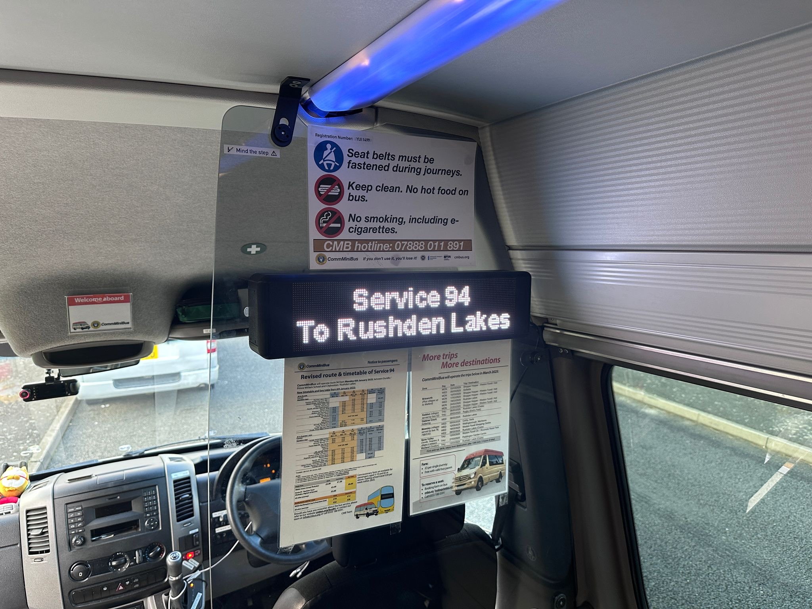

Smarter Bus Operations, One Stop at a Time
Introducing Alpha – our audio-visual announcement system that helps operators meet PSVAIR requirements while laying the foundation for a smarter, integrated bus operation platform.
{kind=link}
{kind=link}
{kind=link}
{kind=link}
{kind=link}
Driving Better Services for Operators and Passengers
At IT9, we're on a mission to improve the operations of bus services for the benefit of passengers — by providing affordable, all-in-one solutions that simplify compliance, enhance the passenger experience, and reduce operational complexity.
We know the industry firsthand, having run bus routes across the UK and Asia. From rural services to city routes, we understand the realities operators face — and we're building tools that help.
Our unique Rail Mode (beta) supports pre-loaded GB rail routes and station data. There's a small subscription to keep the dataset up to date, which helps operators avoid the last-minute scramble to prep announcements before rail replacement duties.
{kind=link}
{kind=link}
Meet Alpha – Our latest audio-visual announcement system. Built for Compliance. Designed for Growth.

PSVAIR Compliant
Fully compliant with latest UK regulations
Free upgrade
Railway Replacement package will be added when fully developed
Simple integration with bus open data services and more.
Your all-in-one solution in the long run.
Why IT9?
Built by bus operators, for bus operators
Ideal for small to mid-sized firms
UK-based support team
Scalable technology, affordable pricing
Product Description
Our products offer a range of benefits for bus operators. Get in touch with our team to learn more — below you'll find a quick overview of what we offer.
{kind=link}
Alpha AIR
On-board Announcement System
Next-generation on-board announcement system built specifically for UK bus operators. Features integrated GPS, automatic next-stop announcements, driver override capability, and support for regional accents and languages.
Interested in Seeing Alpha in Action?
We're now offering early demos and meetings for UK bus and coach operators. Let's discuss how Alpha can support your routes — and hear what features you'd love to see next.